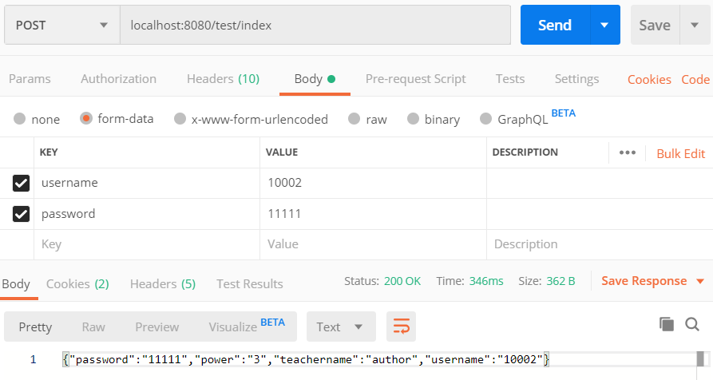
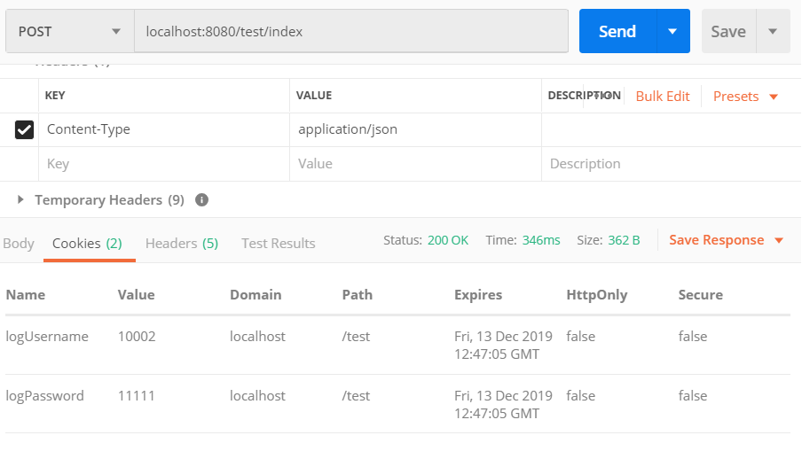

Spring Boot是一个简化Spring开发的框架。用来监护spring应用开发，约定大于配置，去繁就简，just run 就能创建一个独立的，产品级的应用。
我们在使用Spring Boot时只需要配置相应的Spring Boot就可以用所有的Spring组件，简单的说，spring boot就是整合了很多优秀的框架，不用我们自己手动的去写一堆xml配置然后进行配置。从本质上来说，Spring Boot就是Spring,它做了那些没有它你也会去做的Spring Bean配置。
使用Cookie原因
首先本来是准备用Session，但是Session在会话断开后就消失了，考虑到老师们可能会中途因为一个紧急消息就先跳转出去种植会话，所以我选择使用Cookie
创建
首先创建一个cookie类 CookieUtil
1
2
3
4
5
6
7
| public static void setCookie(HttpServletResponse response, String key, String value, int expiry){
Cookie cookie = new Cookie(key, value);
cookie.setMaxAge(expiry);
cookie.setSecure(true);
cookie.setHttpOnly(true);
response.addCookie(cookie);
}
|
什么是HttpOnly？
HttpOnly是Set-Cookie HTTP响应头中包含的附加标志。生成cookie时使用HttpOnly标志有助于降低客户端脚本访问受保护cookie的风险（如果浏览器支持它）。
如果HTTP响应头中包含HttpOnly标志，只要浏览器支持HttpOnly标志，客户端脚本就无法访问cookie。因此，即使存在跨站点脚本（XSS）缺陷，且用户意外访问利用此漏洞的链接，浏览器也不会向第三方透露cookie。
如果浏览器不支持HttpOnly并且网站尝试设置HttpOnly cookie，浏览器会忽略HttpOnly标志，从而创建一个传统的，脚本可访问的cookie。
大多数XSS攻击的目的都是盗窃cookie。服务端可以通过在它创建的cookie上设置HttpOnly标志来缓解这个问题，指出不应在客户端上访问cookie。
客户端脚本代码尝试读取包含HttpOnly标志的cookie，如果浏览器支持HttpOnly，则返回一个空字符串作为结果。这样能够阻止恶意代码（通常是XSS攻击）将cookie数据发到攻击者网站。
综上所述：
设置HttpOnly可以防止一些最基础的xss，但是不能防止页面跳转后获取cookie
没有绝对的安全
什么是Secure?
当设置Cookie中Secure为true,则指示浏览器仅通过 HTTPS 连接传回 cookie。这可以确保 cookie ID 是安全的，且仅用于使用 HTTPS 的网站。如果启用此功能，则 HTTP 上的会话 Cookie 将不再起作用。
控制器中进行配置
返回Set-Cookie
1
2
3
4
5
6
7
8
9
10
11
12
13
14
| public String index(HttpServletRequest request, HttpServletResponse response, String username, String password){
User user = userMapper.selectByPrimaryKey(username);
if(user.getPassword().equals(password)){
System.out.println(user);
CookieUtil cookie = new CookieUtil();
int expire = 60 * 60 * 24 * 7;
cookie.setCookie(response,"logUsername",user.getUsername(),expire);
cookie.setCookie(response,"logPassword",user.getPassword(),expire);
return JSON.toJSONString(user);
}
else{
return "fail";
}
}
|
PS：request为请求头，response为响应头
这段代码为，当登陆传入账号和密码，以及响应头后，确认账号密码存在，服务器返回响应报文给客户端，响应的Response Header中的Set-Cookie就是告诉客户端为当前页面设置Cookie，当客户端接收到Set-Cookie后下次请求会自动带上Cookie
我这边Cookie时间设置成3个月，因为项目中对快捷登陆要求较高，能方便点就方便点。
利用Cookie
1
2
3
4
5
6
7
| public String logFilling(HttpServletRequest request, HttpServletResponse response){
Map<String, String> map = CookieUtil.getCookies(request);
String username = map.get("logUsername");
List<useClass> useClassList = useClassMapper.selectUseClass(username);
System.out.println(useClassList.size());
return JSON.toJSONString(useClassList);
}
|
大致为当页面访问logFilling页面时，我获取他request请求头带来的Cookie的信息，来进行信息的预查询
简单访问：

发现可以访问成功，并且Cookies还多出了两项。

因为某种原因我还为设置Httponly,以及Secure。
附Cookie类代码（全）
1
2
3
4
5
6
7
8
9
10
11
12
13
14
15
16
17
18
19
20
21
22
23
24
25
26
27
28
29
30
31
32
33
34
35
36
37
38
39
40
41
42
43
44
| package com.example.logSystem.pojo;
import javax.servlet.http.Cookie;
import javax.servlet.http.HttpServletRequest;
import javax.servlet.http.HttpServletResponse;
import java.util.HashMap;
import java.util.Iterator;
import java.util.Map;
public class CookieUtil {
public static void setCookie(HttpServletResponse response, String key, String value, int expiry){
Cookie cookie = new Cookie(key, value);
cookie.setMaxAge(expiry);
response.addCookie(cookie);
}
public static Map<String, String> getCookies(HttpServletRequest request){
Map<String, String> map = new HashMap<>();
Cookie cookies[] = request.getCookies();
if (cookies != null){
for(int i = 0; i < cookies.length; i++){
if(!"JSESSION".equals(cookies[i].getName()))
map.put(cookies[i].getName(), cookies[i].getValue());
}
}
return map;
}
public static void clear(HttpServletRequest request, HttpServletResponse response){
Map<String, String> map = getCookies(request);
Iterator<Map.Entry<String, String>> iter = map.entrySet().iterator();
while(iter.hasNext()){
Map.Entry<String, String> me = iter.next();
Cookie cookie = new Cookie(me.getKey(), "");
cookie.setMaxAge(0);
response.addCookie(cookie);
}
}
}
|